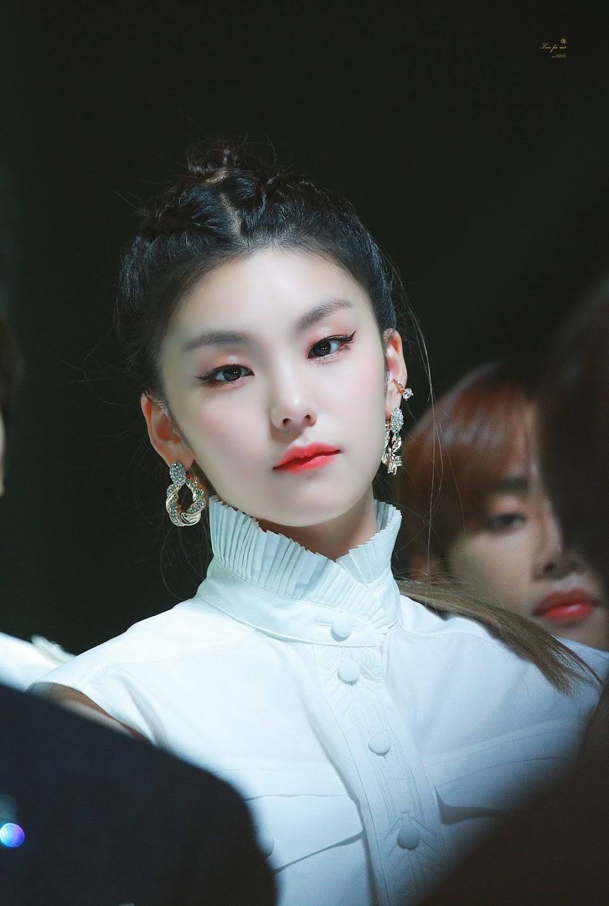
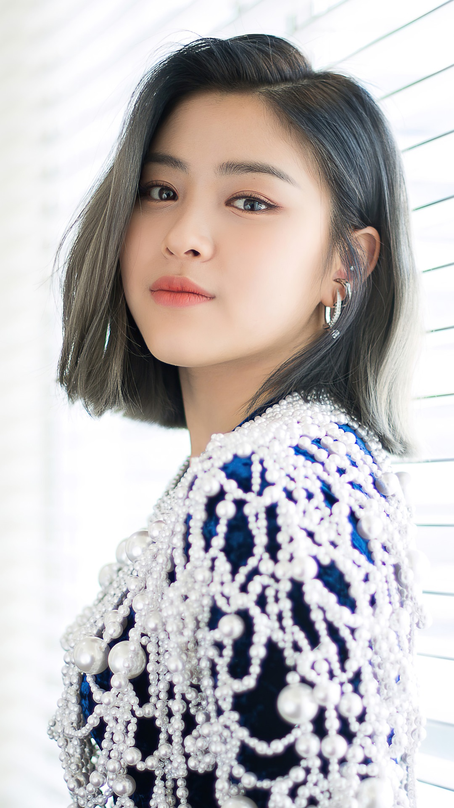
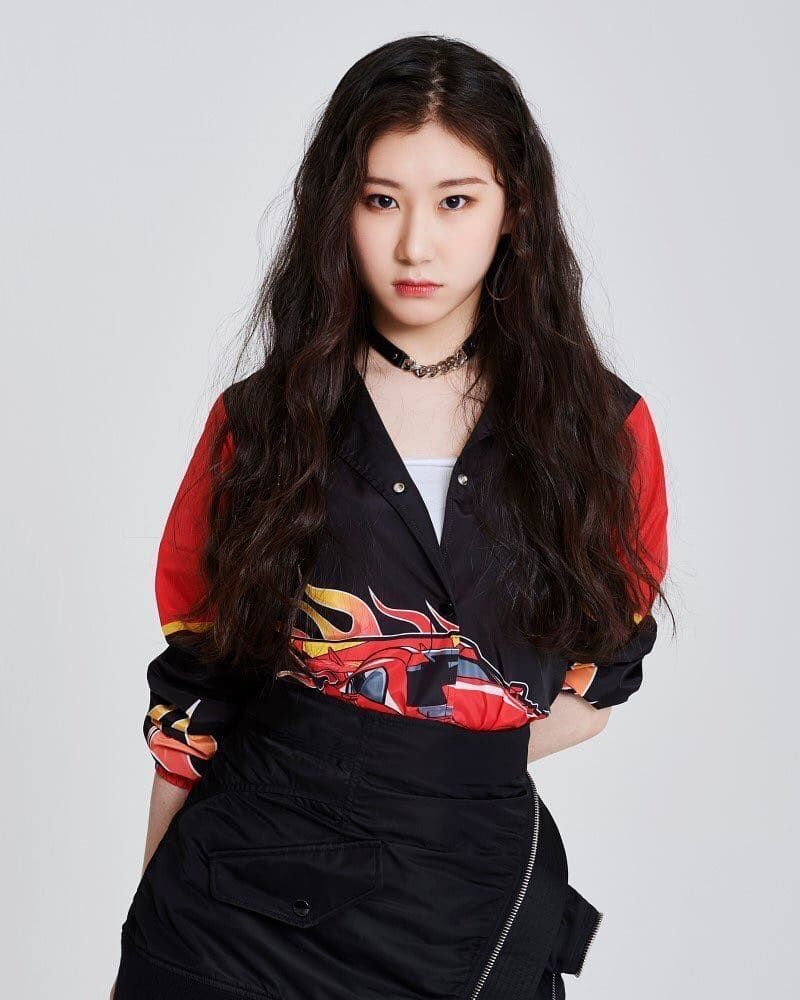
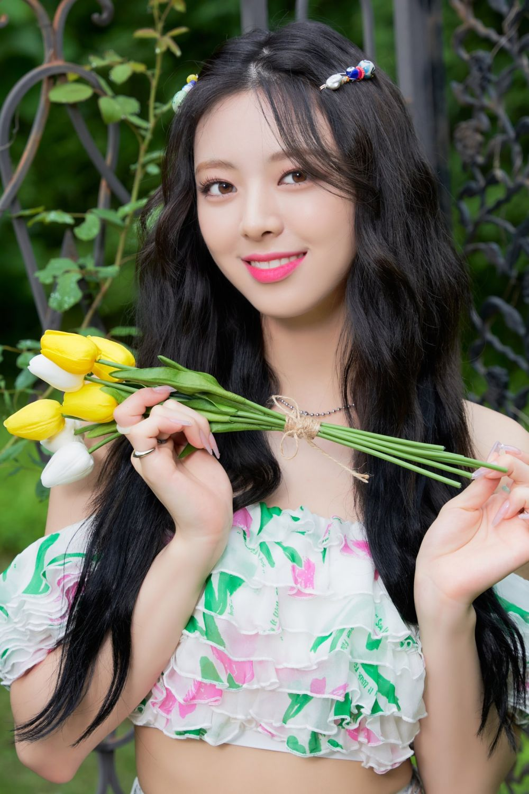
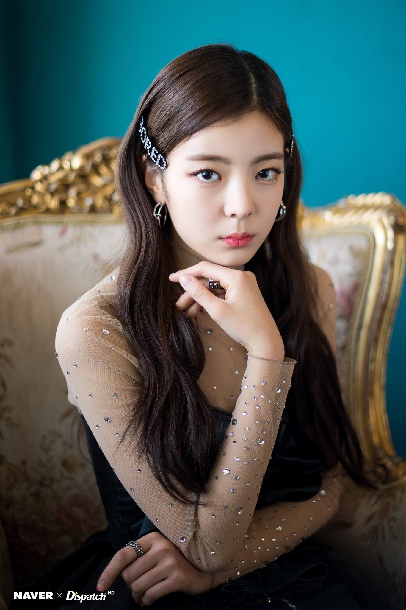

ITZY (있지) is a five-member girl group under JYP Entertainment. They consist of Yeji, Lia, Ryujin, Chaeryeong, and Yuna. They debuted on February 11, 2019, with the single album, “IT’z Different”.

Yeji'S PROFILE
Stage Name: Yeji (예지)
Birth Name: Hwang Yeji (황예지)
English Name: Lucy Hwang
Position: Leader, Main Dancer, Lead Vocalist, Sub Rapper
Birthday: May 26th, 2000
Zodiac Sign: Gemini
Height: 167 cm (5’6’’)
Weight: 46 kg (101 lbs)
Blood Type: A
Yeji Facts:
– Yeji’s hometown is Wansan, Jeonju, South Korea.
– She has an older sister born in 1998.
– Education: Jeonju Hwasan Elementary School (graduated), Jeonju Geunyoung Middle School (graduated) & Gyogyo Jeonju Commercial Information Reporting School (graduated).
– Yeji became a trainee in 2016, so she trained for about 3 years.
– She made a cameo in episode 8 Twenty Again (2015).
– Yeji is close to AB6IX‘s Daehwi.
– She appeared in episode 1 of Stray Kids‘ survival show (2017).
– She was a contestant on SBS’s The Fan (Eliminated in episode 5) (2018).

Ryujin'S PROFILE
Stage Name: Ryujin (류진)
Birth Name: Shin Ryujin (신류진)
Position: Main Rapper, Lead Dancer, Sub Vocalist, Center
Birthday: April 17th, 2001
Zodiac Sign: Aries
Height: 164 cm (5’4’’)
Weight: 49 kg (108 lbs)
Blood Type: B
Ryujin Facts:
– She was born in Chuncheon, Gangwon, South Korea.
– Ryujin’s hometown is Seoul, South Korea.
– She has an older brother born in 1998 named Ryuseong.
– Education: Seoul Gwangnam Elementary School (graduated), Daejang Middle School (graduated), Gyeonggi Girls’ High School (transferred) & Hanlim Entertainment Arts High School (graduated).
– She starred in BTS‘ Love Yourself Highlight Reel (She was J-Hope and Jimin‘s pair).
– She acted in the movie The King (2017).
– Ryujin appeared in episode 1 of Stray Kids‘ survival show (2017).
– She was a contestant on YG Entertainment’s MIXNINE (Ranked #1).
– Yang Hyunsuk, the former CEO of YG Entertainment, offered her to join YG Entertainment, but she decided to stay at JYP Entertainment.
– Ryujin is friends with Dreamcatcher‘s Jiu and ALICE‘s Bella.
– Ryujin has 2 cats named Byullie and Dallie.

Chaeryeong'S PROFILE
Stage Name: Chaeryeong (채령)
Birth Name: Lee Chaeryeong (이채령)
Position: Main Dancer, Sub Vocalist, Sub Rapper
Birthday: June 5th, 2001
Zodiac Sign: Gemini
Height: 166 cm (5’5″)
Weight: 46 kg (101 lbs)
Blood Type: B
Chaeryeong Facts:
– Her hometown is Yongin, South Korea.
– Her older sister is Lee Chaeyeon, and her younger sister is Lee Chaemin.
– Education: Yongin Seocheon Elementary School (graduated), Yongin Seocheon Middle School (graduated) & Hanlim Entertainment Art High School (Musical major / graduated).
– She became a trainee in 2014. She trained for 5 years.
– Her nickname is “Chocolate Holic”.
– Her English name used to be Judy Lee before she changed it to Serena Lee.
– Chaeryeong gets scared easily.
– Chaeryeong, along with her sister Chaeyeon, auditioned for Fantagio in 2012, but didn’t make it.
– She was a contestant on SIXTEEN when she was 14 (Ranked #12).
– She was a contestant on Kpop Star 3 when she was 11.
– Her hobbies are watching dramas, sleeping and eating delicious food.

Yuna'S PROFILE
Stage Name: Yuna (유나)
Birth Name: Shin Yuna (신유나)
Position: Lead Rapper, Lead Dancer, Sub Vocalist, Visual, Maknae
Birthday: December 9th, 2003
Zodiac Sign: Sagittarius
Height: 170 cm (5’7’’)
Weight: 46.8 kg (103 lbs)
Blood Type: A
Yuna Facts:
– Yuna’s hometown is Suwon, South Korea.
– She has an older sister.
– Education: Suwon Hwayang Elementary School (graduated), Yeongbok Girls’ Middle School (graduated) & Hanlim Entertainment Arts High School (Practical Dance Department / student).
– She appeared in BTS‘ Highlight Reels (She was Jungkook‘s pair) (2017).
– Yuna used to wear braces.
– She trained for 3 years.
– Her favorite color is pink.
– In her opinion, the best BLACKPINK song is “Forever Young”.
– She’s the tallest member.
– She used to play floorball for about 4 years.
– Yuna says she’s the member with the best advice along with Ryujin.

Lia'S PROFILE
Stage Name: Lia (리아)
Birth Name: Choi Jisu (최지수)
Position: Main Vocalist, Sub Rapper
Birthday: July 21st, 2000
Zodiac Sign: Cancer
Height: 162.3 cm (5 ft 3¾ in)
Weight: 43 kg (94 lbs)
Blood Type: AB
Lia Facts:
– Lia’s hometown is Incheon, South Korea.
– She used to live in Canada.
– She has a younger brother.
– One of her nicknames is LoveLia.
– Education: Incheon Sinsong Elementary School (graduated), Shinsong Middle School (transferred), Northern College Eight School Jeju (transferred), Shinsong Middle School (graduated) & Seoul Performing Arts High School – department of Practical Music (SOPA / graduated).
– Her shoe size is 240mm.
– She was a trainee for more than 2 years.
– Lia is a former SM Entertainment trainee.
– She received vocal training at Dream Vocal Academy.
– Her nicknames are Honey Lia, Cinnamon Lia, and Ariana Grande.
– Her role model is her mom.
TWICE MEMBER'S
ABOUT US
K-Pop and K-Drama artist profile shows where this website reveals the real information of your idol such as the Real Name, Age, where it Lives